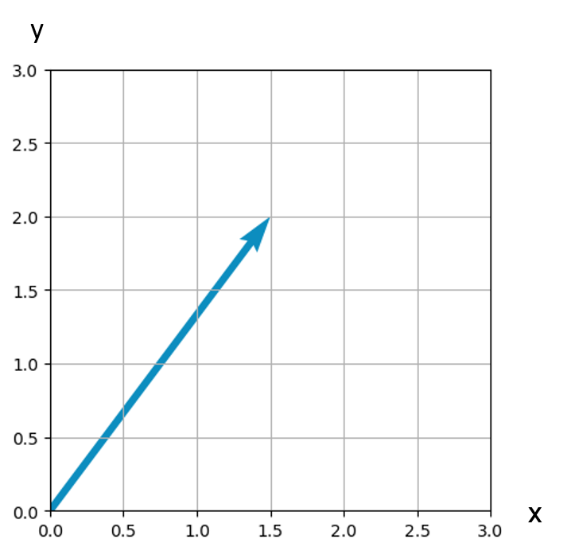
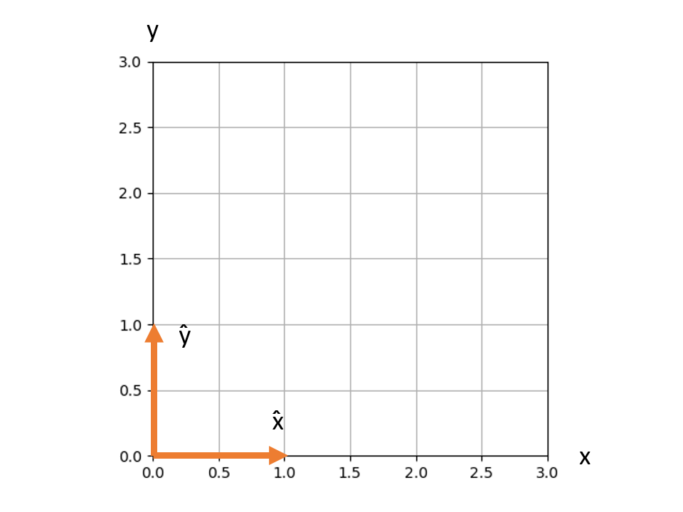
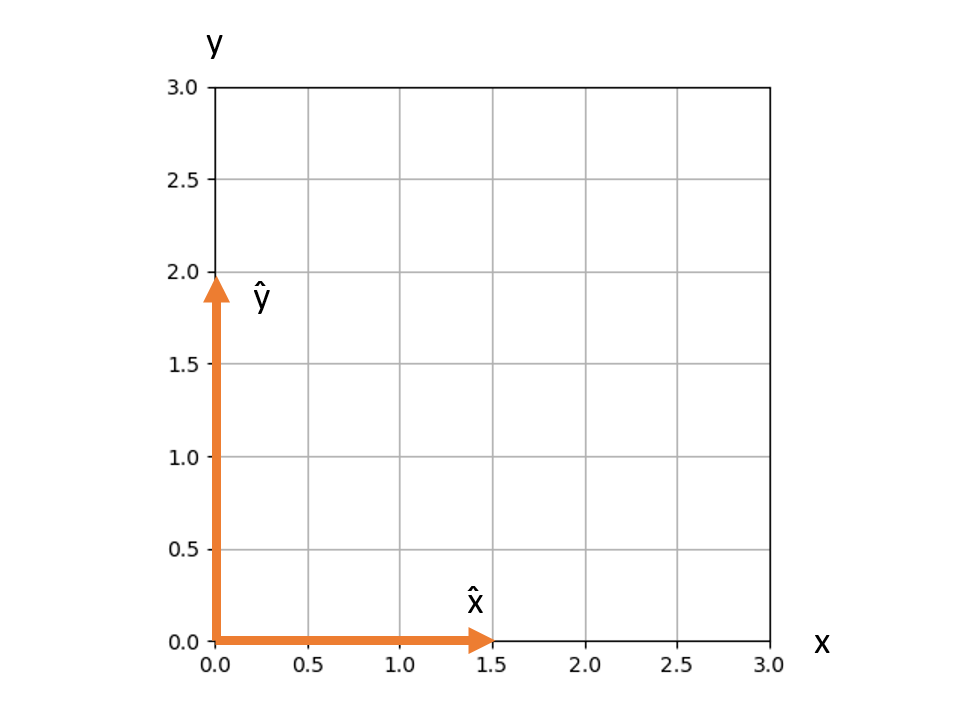
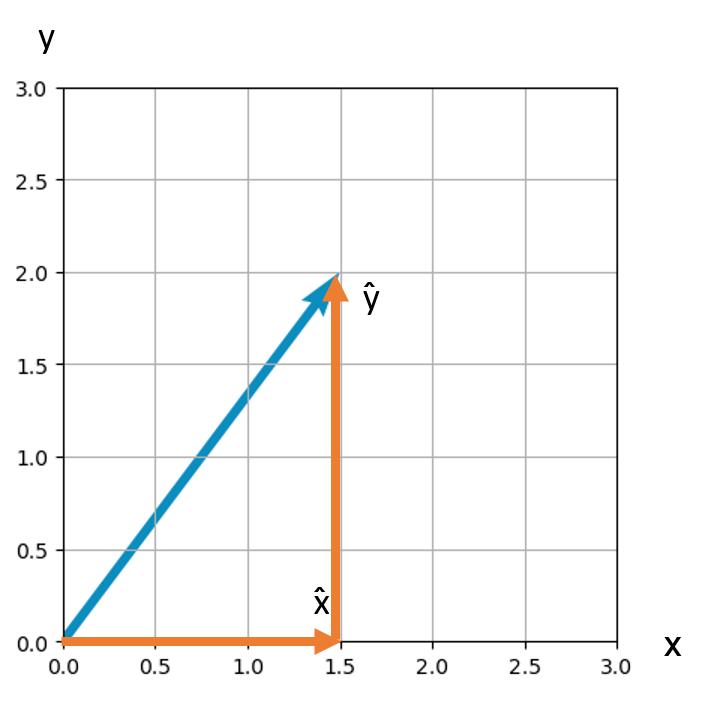
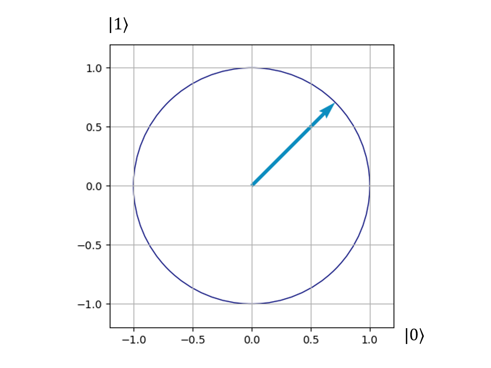

Superposition 101
January 15th, 2023This post is meant for the layman who read some articles about quantum computing or just quantum mechanics in general, and that is wanting to understand a little more of the jargon mentioned in them. Maybe you just watched a youtube video from a questionable yoga instructor/guru claiming you can "place your mind in superposition with the earth" and wanted to know what the hell they meant. This is the place for you! All you will need to understand this post (or so I claim) is a basic understanding of vectors. My hope is that anyone able to follow this post should be able to understand quantum superposition beyond the popular phrase "it is in both states at the same time!".
Mathematical Definition
Classical computers, like the one you are reading this article on, work with bits. A bit is any system that has two possible states. The convention is to label these states as "0" and "1". We are then able to represent information as a collection of bits and create algorithms that process these bitss in such a way that solves a problem we want.
Quantum computers are built out of qubits. Qubits are bits that take advantage of quantum phenomena, to be more specific, superposition. Superposition is the ability of a quantum system to be in a state which is a linear combination of many other distinct quantum states.
This last sentence may seem like a mouthful of math jargon, what is a linear combination? How is this related to quantum states? Well, it turns out you may already know from high school math concepts. For example, in the figure below, we have a vector. In physics classes, it is often useful to decompose a vector into its x and y components. In this case, we can do so just by reading the graph. The x component, in this case, is 1.5, and the y component is 2. Now that we know the components of the vector, we can write a description of the vector.
 The most common way to describe a vector in introductory classes is to write both components inside a parenthesis, separated by a comma. In this case, our vector would be (1.5, 2). There is a second way to describe vectors, which is in terms of unit vectors. A unit vector is simply a vector whose length is equal to one. So we define the symbols x̂ and ŷ as unit vectors pointing in the x-direction and the y-direction, correspondingly. Another important concept to remember about vectors is scaling. Scaling is an operation to change the length of a vector, without altering the direction. Scaling a vector is done by simply multiplying it by a constant. Consider a vector that has some length V, and we multiply the vector times some constant A, the length of the new vector will be A x V.
This is where unit vectors are useful. Because their length is 1, and any number multiplied by one is itself, then we can obtain a vector of any size we want. For example, if we multiply x̂ by 1.5 (also written as 1.5 x̂), and ŷ by 2 (also written as 2 ŷ). We obtain a vector pointing in the x-direction of size 1.5, and a vector pointing in the y-direction of size 2.
If we then add these two vectors, we obtain our original vector from the first figure!
Thus, the second way to write this vector is exactly that, the addition of these two scaled unit vectors: 1.5 x̂ + 2 ŷ. This is what is formally called a “linear combination”. Our blue vector is a linear combination of x̂ and ŷ, furthermore, any vector in this 2-D plane can be represented as a linear combination of these two unit vectors written as a x̂ + b ŷ (where "a" and "b" could be any real number).
What does this math mean physically?
Let’s take a step back and remember the sentence we are trying to explain “Superposition is the ability of a quantum system to be in a state which is a linear combination of many other distinct quantum states". We have now learned what a linear combination is in terms of unit vectors. How do we make a linear combination of quantum states? It turns out that quantum states are vectors too![1]. Instead of putting hats on top of the letters, quantum states are conventionally represented as follows: |x⟩. If we were to use our previous example, but for a quantum system, we could write the linear combination as a |x⟩ + b |y⟩. Have in mind, that |x⟩ and |y⟩ represent distinct quantum states and the linear combination of them is itself a new quantum state, which is a superposition of the other two! It is also important to note that these constants which we called components before are called “amplitudes” in quantum mechanics. For example, one could say the state |x⟩ has an amplitude of "a".
So now, how do we build qubits out of superposition? For this, we consider a system with only two possible quantum states one that represents a 0, and one that represents a 1, we write them appropriately as |0⟩ and |1⟩.
There is a question that comes naturally from learning about superposition, what does this really mean? What does this mathematical concept represent physically? You see, superposition is a mathematical implication of some physical phenomena that had been observed back when quantum mechanics was being formulated. But the reality is that when we measure a quantum system the superposition disappears. For example, if we have a qubit in some superposition, after we measure it we will observe the qubit to be either in the 1 state or the 0 state, we don’t directly observe any combination. Because of this, physicists had a hard time figuring out what a superposition represented physically. Later on, it was suggested by Max Born that the amplitude of a quantum state in a superposition, is related to the probability of observing this state (now known as the Born rule). To be more specific, the probability of measuring a quantum state is equal to the absolute value of the amplitude squared. For example, if we have a state a |x⟩ + b |y⟩, the Born rule says that the probability of observing outcome 0 is \(|a|^2\), and similarly \(|b|^2\) to observe 1 [2]. This is one of the postulates of quantum mechanics, which means we assume it is true, due to experimental evidence, but quantum theory itself does not tell us why. Also, In order to follow standard probability convention, we want our probabilities to add up to 1. This restricts our vector to have a length of size 1.
If we put everything we have learned together, we can represent a qubit in a graph such as the one below. Where the horizontal axis represents the |0⟩ state and the vertical axis represents the |1⟩ state, and where the vector must lie on the surface of a circle of radius 1[3].
Let’s go back and compare this to our unit of classical computing, the bit. The only thing one can do with a single bit is flip it. If you have a 0 make it a 1, and if you have a 1 make it a 0. There does not exist any other operation one can do with such a simple system. On the other hand, with a qubit, we can flip it, but we can also rotate our vector any amount of degrees around the circle depicted above. This alone gives us an infinite amount of operations one can perform on a qubit. As a consequence, we obtain new ways to encode and process information, which is why we now have a whole field dedicated to quantum information.
Wait but did you answer the question?
A careful reader might notice that previously we asked what a superposition is, which is made of amplitudes, a & b, but the last section actually answered what the absolute value squared of an amplitude is \(|a|^2\) & \(|b|^2\). The reality is that we actually do not know what an amplitude represents physically, and no one really cares-- Is what a physicist back in the early 1900s would say! Nowadays, the task of answering this question is an entire field of physics. Any theory attempting to explain amplitudes is called "an interpretation of quantum mechanics". This is considered a highly philosophical field of physics, considering most of the highly regarded interpretations have no way of being experimentally tested.
[1]Instead of vectors in 2-D space, they are vectors in something called Hilbert Space, but this should not change anything mentioned in this discussion.
[2] One thing I did not mention, is that amplitudes are complex numbers. This means that an imaginary part could be added to the real one shown throughout this post. In terms of the graph this means there is one more dimension that needs to be added, going in and out of the page. With this extra dimension you are able to truly represent every possible quantum superposition.
[3] For the readers that prefer examples with numbers, consider a superposition where one of the terms is \(1 \over \sqrt{3}\)|0⟩ then the probability of observing a 0 when we measure it is \(|{{1\over \sqrt{3}}|}^2\) = \(1 \over 3\)